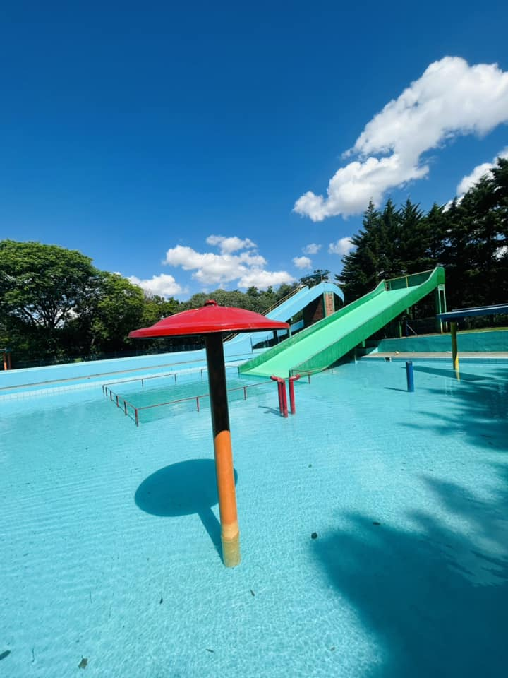
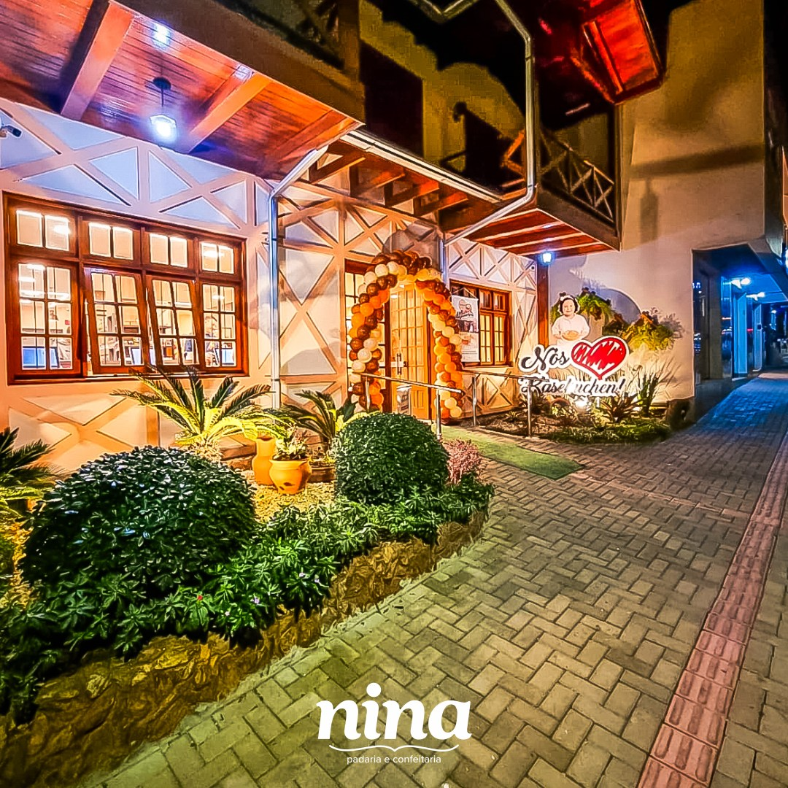

.png)

O que fazer em Panambi?


Vale do Lazer Aqua Park
Toboáguas, piscinas, e diversão para aproveitar o verão do melhor jeito!
Saiba Mais

História de Panambi
Um pouco de história
A povoação, de origem portuguesa teve início a partir de 1820 e a colonização, de
origem alemã, iniciou com a fundação da Colônia chamada "Neu-Württemberg". O Dr.
Hermann Meyer, em expedição realizada ao Mato Grosso, tomou conhecimento da
existência de terras férteis no Estado. Para promover os trabalhos de colonização,
manteve um administrador remunerado, o senhor Carlos Dhein, que lavrou a primeira
escritura da colônia para Dr. Meyer, em 31 de agosto de 1898. A colonização visava,
inicialmente, imigrantes vindos de Württemberg, na Alemanha, mas também famílias
vindas das antigas colônias da região de Estrela e de Santa Cruz do Sul ocuparam seu
espaço no local.
De 1898 até 1938, permaneceu a denominação de Neu-Württemberg para a colônia como um todo. Com a demarcação da área urbana em 1901, recebeu a designação Elsenau, como uma homenagem à esposa de Meyer, chamada Else. Em 1938 a colônia foi elevada à categoria de Vila. A partir daí ainda houve mais três mudanças de nome: Pindorama (1938), Tabapirã (1944), e, finalmente, Panambi, a partir de 29 de dezembro de 1944.
De 1898 até 1938, permaneceu a denominação de Neu-Württemberg para a colônia como um todo. Com a demarcação da área urbana em 1901, recebeu a designação Elsenau, como uma homenagem à esposa de Meyer, chamada Else. Em 1938 a colônia foi elevada à categoria de Vila. A partir daí ainda houve mais três mudanças de nome: Pindorama (1938), Tabapirã (1944), e, finalmente, Panambi, a partir de 29 de dezembro de 1944.

Contando com uma estrutura sócio-econômica bem desenvolvida, em 1949 pleiteou-se a
emancipação, após uma vasta campanha. Com vários conflitos e discordâncias, realizaram-se
dois plebiscitos, no período de 1949 e 1953, sendo que, no dia 15 de dezembro de 1954, foi
decretada a emancipação de Panambi e marcada a data para a primeira eleição para Prefeito e
para vereadores. Sua instalação oficial ocorreu em 28 de fevereiro de 1955. (Fonte: MAHP)